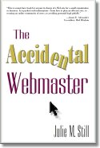

|  |
| About IR |
| Editors |
| Author instructions |
| Copyright |
| Author index |
| Subject index |
| Search |
| Reviews |
| Register |
| Home |
Still, Julie M. The accidental Webmaster. Medford, NY: Information Today, Inc., 2003. xiii, 192, [1] p. ISBN 1-57387-164-8. $29.50
Julie Still is a librarian at the Camden campus of Rutgers, The State University, in New Jersey and is, herself, an 'accidental Webmaster'—you can see her work at the Abington Trails site and in the first chapter she explains how she managed to become a Webmaster by accident (well, almost by accident).
The first thing to say about this book is that it is not a technical handbook: there is not a line of HTML code or a screen shot of a Website to be found. It is intended for small businesses and voluntary or non-profit organizations and it is more of a general guide to how to plan a Website, the problems to be aware of and the design issues. It is a readable text, and you should be able to read it in a couple of hours. If you've recently become a Webmaster by accident, you will find that a lot of the material rings a bell with your own experience, and you'll probably learn a thing or two.
The book is in two parts: Part I covers the basic concepts such as what to call your site, how to find a host, and what the legal issues are; and Part II gives brief guidance on sites for particular kinds of organizations, such as sites for churches and other religious groups, fan sites, family group sites and sites for children. These chapters are very brief, generally three to five pages, and give specific advice for the type of organization dealt with. For example, in relation to fan sites:
If your focus involves music, you can pretty much forget about putting more than a snippet or two of a sound file on your site. The law has tightened up quite a bit in this area. The exception is if you have created (written, performed, etc.) the music in question.
There are lists of recommended reading at the end of each chapter, and these are cumulated into the bibliography at the end of the book. There is also a good index.
If you are just starting out as an 'accidental Webmaster' you'll find this book useful, and even if you are experienced, you might still pick up an idea or two.
Professor Tom Wilson
Editor-in-Chief
April, 2005
How to cite this review
Wilson, T.D. (2005). Review of: Still, Julie M. The accidental Webmaster. Medford, NY: Information Today, Inc., 2003. Information Research, 10(3), review no. R172 [Available at: http://informationr.net/ir/reviews/revs172.html]